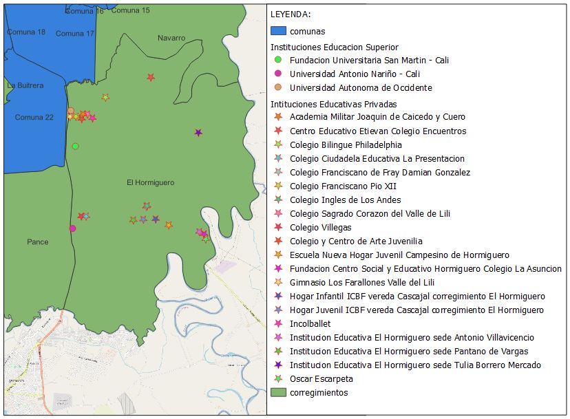

El Hormiguero, un corregimiento de Cali, que limita con el corregimiento de Navarro y con las comunas 17 y 22 de la capital vallecaucana, tiene más de 1000 viviendas, de habitantes proveniente del Valle, el norte del Cauca, el sur de Chocó y Nariño. Actualmente, cuenta con más de 7300 pobladores, que vive entre los estratos 1, 2 y 3, quienes basan su economía, en su gran mayoría, en la extracción de arena realizada artesanalmente por los nativos de la región y de manera mecánica por empresas. (Datos de 2018)
La zona del Hormiguero empezó a poblarse alrededor del año 1990 con gentes provenientes del norte del Cauca, sur del Chocó y Nariño.
El corregimiento cuenta en su área con varias Instituciones Educativas Privadas e Instituciones de Educación Superior.
